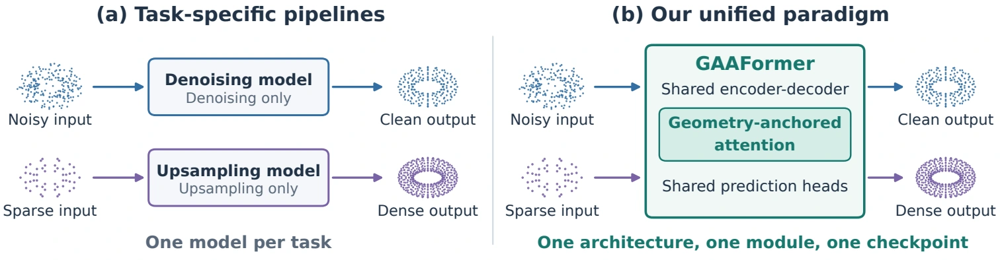

GeoOUFormer
Geometry-Anchored Attention for Joint Point Cloud Denoising and Upsampling
Manuscript submitted to arXiv.
Recovering object surfaces from noisy or sparse points
A 3D scanner records an object as a collection of points. Some points may lie away from the true surface, while other regions may contain too few points to capture their shape. This project studies how to remove noise and add plausible points so that the surface is represented more accurately and completely.
For a scanned chair, this means bringing misplaced points closer to its surface and adding detail where the samples are sparse. GeoOUFormer improves how the model exchanges information between nearby regions while generating the restored point cloud.

Why parts of a surface can disappear
The model divides 3D space into progressively smaller cells using an octree: each retained cell can be split into eight smaller cells. It decides which cells to keep and eventually generates a point inside each retained cell at the finest level.
If the model mistakenly deletes a coarse cell containing part of a chair leg, that region is never subdivided further. The final point cloud may therefore miss part of the leg. More accurate point placement later cannot recover a region whose branch has already been removed. Reliable information from neighboring cells matters when the model makes these keep-or-delete decisions.
My contribution
I changed how cells exchange information in the model's decoder, the part that generates the output point cloud. The original method orders cells in a sequence and divides that sequence into groups of a fixed size. When a cell is deleted, the sequence closes the gap. Other cells can then move into different groups even though their spatial positions have not changed.
I implemented and evaluated a grouping rule based on spatial coordinates. Cells within the same 3D window exchange information, so deleting a cell does not reassign the remaining cells merely because the sequence has become shorter. Alternating shifts of the window boundaries allow neighboring regions to communicate.
The existing denoising and upsampling framework is retained, including its encoder, positional encodings, prediction heads, and parameter count. I evaluated the change through comparisons with the same backbone, controlled variants, neighborhood-deletion experiments, and inference-cost measurements.
Attention anchored to geometry
Group by location
Attention lets each cell combine information from other cells. Here, the groups are fixed 4 × 4 × 4 voxel windows. Empty positions are masked out rather than filled with cells from elsewhere. At a fixed depth and window shift, deletion removes neighbors without moving surviving cells into new groups.
Let adjacent regions communicate
Successive attention blocks alternate between unshifted windows and windows shifted by two voxels. Some cells that were separated by a window boundary can then share information. The model keeps its original ability to handle both denoising and upsampling.

Experimental results
PUNet evaluation uses 20 test geometries at 10k and 50k input points, each with 1%, 2%, and 2.5% noise: 120 denoising inputs. Upsampling uses 27 PU-GAN, 100 PU1K, and 14 Sketchfab inputs. The same checkpoint handles all 261 inputs. The table below reports aggregate PUNet denoising results.
| Model | CD × 10⁵ | HD × 10³ | P2F × 10³ |
|---|---|---|---|
| Serial-OUFormer (baseline) | 6.2743 | 0.8251 | 1.9102 |
| GeoOUFormer | 6.0643 | 0.6655 | 1.9078 |
Across the 120 PUNet denoising inputs, mean Chamfer distance (CD) decreased by 3.35% and Hausdorff distance (HD) by 19.34% relative to Serial-OUFormer, with no increase in model parameters. CD measures overall geometric discrepancy; HD captures the largest nearest-neighbor discrepancy and is sensitive to severe errors. The strongest improvement is in HD, while point-to-surface distance (P2F) changes only slightly.
Upsampling performance remains close to the baseline overall. PU-GAN and Sketchfab show small improvements, while PU1K slightly favors the baseline. The results do not show a consistent improvement across every input or test condition.
Lower is better for all three metrics. Values are reported in the submitted manuscript.
Denoising visual comparison

Upsampling visual comparison

Testing the mechanism
Neighborhood stability
In a perturbation study on six geometries, removing 1% of depth-five branches left surviving-node neighborhood Jaccard at 1.000 for coordinate windows, versus 0.608 for regular Morton groups and 0.546 for dilated groups.
The comparison removes deleted keys from the reference neighborhood. It tests membership stability; attention weights and network outputs can still change.
Attention capacity control
Increasing serialized groups from 32 to 64 tokens produced mean denoising CD of 6.3589, versus 6.2743 for the serialized baseline and 6.0643 for GeoOUFormer (CD × 10⁵).
This control separates the benefit of spatial grouping from the effect of a larger attention buffer.
All values are reported in the submitted manuscript. The deletion-consistency property applies at a fixed depth and shift with fixed node coordinates.
Memory and latency tradeoffs
| Input case | Latency, serial / Geo (ms) | Peak memory, serial / Geo (MiB) |
|---|---|---|
| 10k-point denoising | 131.02 / 135.79 | 1,273.7 / 1,043.3 |
| 50k-point denoising | 251.40 / 259.94 | 2,341.8 / 2,057.8 |
| PU-GAN upsampling | 113.68 / 124.82 | 1,342.9 / 1,091.9 |
On the measured 10k-point denoising input, peak allocated memory fell by 18.1%, while latency increased by 3.6%. Spatial grouping changes memory access and computation even though the learned parameter count remains unchanged.
Each row is one measured input. Latency is the median of three synchronized repeats after two warm-ups; these measurements are not dataset-wide throughput estimates.
What the results establish
This project adapts information sharing to a model that continually keeps and deletes spatial regions during generation. Tying attention groups to spatial coordinates removes one source of unnecessary regrouping and improves average denoising performance without adding parameters.
Stable group membership does not guarantee a correct prediction or recover an already deleted branch: attention weights and later outputs can still change. The experiments evaluate geometric restoration; improvements in robot recognition, navigation, or other downstream applications have not yet been tested.